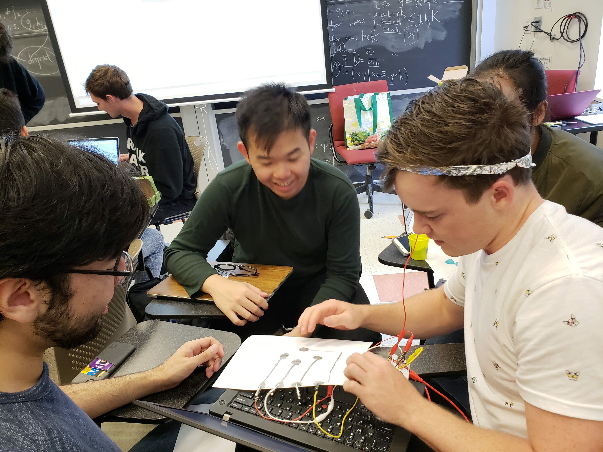
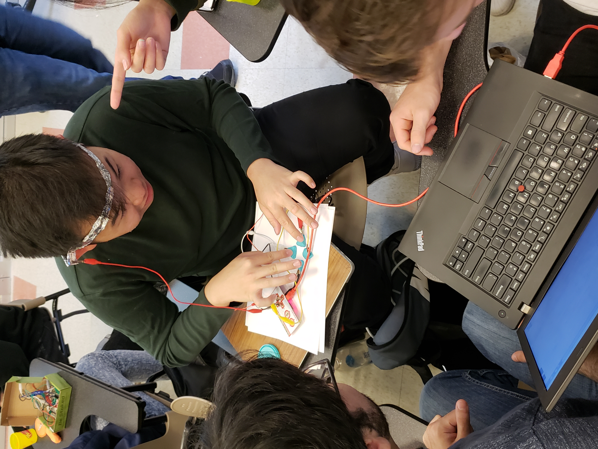

This project is inspired by the classic arcade game Galaga. The objectives are simple: avoid the red asteroids and collect the yellow. I'm a fan of interesting gameplay that arises from simple rules. The game starts easy but grows in difficulty as asteroids spawn.
In order to emphasize timing and precise mechanics, I restricted ship and asteroid movement to 10 block increments. This makes the game feel like it's on a grid, which allows for precise control and the ability to 'jump' over asteroids using the shift key and a directional.
I chose to sync the music and movement of the asteroids. I used the milli() function to make the asteroids descend at 128 beats per minute, the same rate as the song that plays in the background. All the asteroids move at the same time, so it has a pulsing feel, matching the space theme and retro style.
There are three 'types' of asteroids in this game: single asteroids, square composite asteroids, and line composite asteroids. I used the noise() method to generate single asteroids in the middle of the screen and the random() function to generate line asteroids on the left and right edges of the screen. Initially I had all types spawning at equal rates, but I realized that if different areas have varied spawn rates then it creates a more interesting environment.
My group made a physical controller with a left arrow, center button, and right arrow. We used three large chunks of play dough and a tinfoil crown.
 